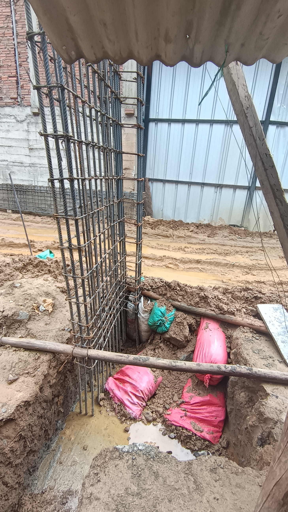
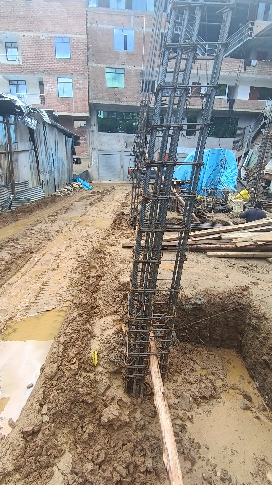

No empieces a construir sin un alcance claro
Cuando una obra arranca con ideas sueltas y sin criterios definidos, los cambios y sobrecostos aparecen muy rápido.
Construcción Segura
Servicio profesional de consultoría en construcción
Acompañamos proyectos para que cada decisión técnica, cada avance y cada recurso se gestione con más claridad, mejor control y mayor confianza.
Respuesta rápida por WhatsApp
Control técnico por etapas
Supervisión clara y seguimiento cercano
Antes de construir
Una vivienda puede representar una inversión de cientos de miles de soles. Por eso, antes de dejar todo solo en manos de la ejecución, conviene tomar una decisión inteligente: separar una parte de esa inversión para asegurar control técnico, supervisión y mejor criterio durante la obra.
Destinar alrededor del 5% a consultoría y supervisión puede ayudarte a reducir errores, detectar problemas a tiempo y cuidar que tu dinero realmente se convierta en una construcción segura y bien resuelta.
Lo complementa. Su función es dar control, validar calidad, ordenar decisiones y proteger mejor tu inversión.
Una obra importante no debería avanzar solo con confianza. Debería avanzar con control.Consejos que ayudan
Cuando una obra arranca con ideas sueltas y sin criterios definidos, los cambios y sobrecostos aparecen muy rápido.
La experiencia del ejecutor es valiosa, pero la supervisión aporta revisión, criterio y validación durante cada etapa.
Detectar un error cuando la obra ya avanzó suele ser mucho más caro que prevenirlo con seguimiento oportuno.
Lo que no se debe hacer en obra

Cuando el área de intervención no se ordena bien, aumentan los riesgos para las personas, los materiales y la continuidad de la obra.

Los elementos estructurales necesitan control y criterio durante la ejecución. Revisar tarde suele costar mucho más.

La improvisación constante termina afectando tiempos, calidad y seguridad. La gestión correcta ayuda a recuperar control.
Servicios principales
Evaluamos el proyecto, identificamos riesgos, revisamos alcances y orientamos decisiones con criterio profesional.
Hacemos seguimiento al avance, la calidad y el cumplimiento para que la ejecución no se desordene.
Ordenamos información clave de la obra para que tengas visibilidad sobre tiempos, observaciones y prioridades.
Apoyamos la articulación entre cliente, contratistas y especialidades para avanzar con menos fricción.
Nuestra historia
Construcción Segura surge como un emprendimiento orientado a consultoría, supervisión y gestión de obra. Nace de una realidad muy común: muchos proyectos avanzan sin suficiente control técnico, con poca claridad sobre el estado real de la obra y con decisiones tomadas más por urgencia que por criterio.
Por eso la propuesta es clara: acompañar al cliente con información útil, control visible y supervisión responsable para que pueda construir, corregir o coordinar con mucha más confianza.
Brindar consultoría, supervisión y gestión de obra con orden, transparencia y criterio técnico, ayudando a cada cliente a tomar mejores decisiones durante su proyecto.
Consolidarnos como una firma confiable y bien recomendada en Lima y el Perú, reconocida por su capacidad de ordenar proyectos, prevenir errores y dar respaldo técnico real.
Responsabilidad, criterio técnico, comunicación clara, seguimiento riguroso y respeto por el tiempo y la inversión del cliente.
Por qué elegirnos
Construcción Segura está pensada para clientes que necesitan más que mano de obra: necesitan criterio, supervisión y alguien que les ayude a entender qué está pasando en su proyecto.
El objetivo es reducir riesgos, ordenar la obra y dar tranquilidad durante todo el proceso.
Traducimos el proyecto en prioridades, observaciones y decisiones mejor fundamentadas.
Sin cadenas largas ni intermediarios; el seguimiento es cercano y práctico.
Seguimiento de obra, observaciones visibles y foco en cumplimiento técnico.
Cómo trabajamos
Revisamos el proyecto, identificamos el problema real y definimos qué requiere control o supervisión.
Definimos criterios, prioridades, observaciones y la forma más útil de acompañar la obra.
Supervisamos avances, incidencias y cumplimiento para que el proyecto no pierda dirección.
Dejamos observaciones, estado del proyecto y próximos pasos con más claridad para el cliente.
Cobertura y confianza
Atendemos viviendas, locales comerciales, oficinas y proyectos que requieren acompañamiento técnico, control y coordinación. Si necesitas supervisar mejor una obra, ordenar a los involucrados o tener una lectura más clara del avance real, esta propuesta está pensada para ese tipo de cliente.
Casos frecuentes
Cuando el cliente necesita entender avances, validar calidad o tener una segunda mirada técnica sobre lo que se está ejecutando.
Ideal para proyectos que requieren coordinación entre tiempos, proveedores y criterios de ejecución antes de abrir o intervenir el espacio.
Cuando hay observaciones, atrasos o decisiones mal alineadas, ayudamos a recuperar control y claridad.
Confianza que se siente
“Lo que más valoro es que explican bien el trabajo antes de empezar. Eso da tranquilidad y evita sorpresas.”
Cliente residencial Supervisión y control de obra“Necesitábamos avanzar rápido sin desordenar la operación del local. La coordinación fue clara y práctica.”
Cliente comercial Coordinación y seguimiento“Se nota cuando una empresa trabaja con criterio y no improvisa. Eso es lo que genera confianza.”
Administrador de inmueble Gestión y revisión técnicaPagos rápidos
Elige el medio de pago que prefieras y realiza tu abono de forma rápida, segura y directa desde tu celular.
Contacto para confirmaciones
WhatsApp: +51 968 481 482 Te confirmaremos la recepción del pago y la coordinación del servicio.
Ideal para pagos inmediatos desde celular.
Titular: Omar Oswaldo Alcantara Aquino
Alternativa rápida para clientes que usan banca móvil.
Titular: Omar Oswaldo Alcantara AquinoContacto
Si necesitas supervisión, control, revisión técnica o una mejor gestión de obra, conversemos y definimos la mejor forma de acompañarte.
Horario referencial: lunes a sábado, 8:00 a.m. a 6:00 p.m.
Respuesta rápida para visitas, cotizaciones y coordinación inicial.